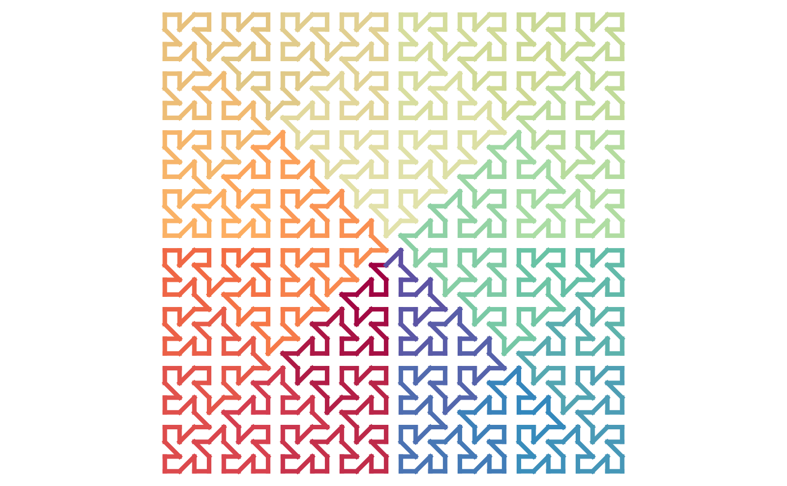
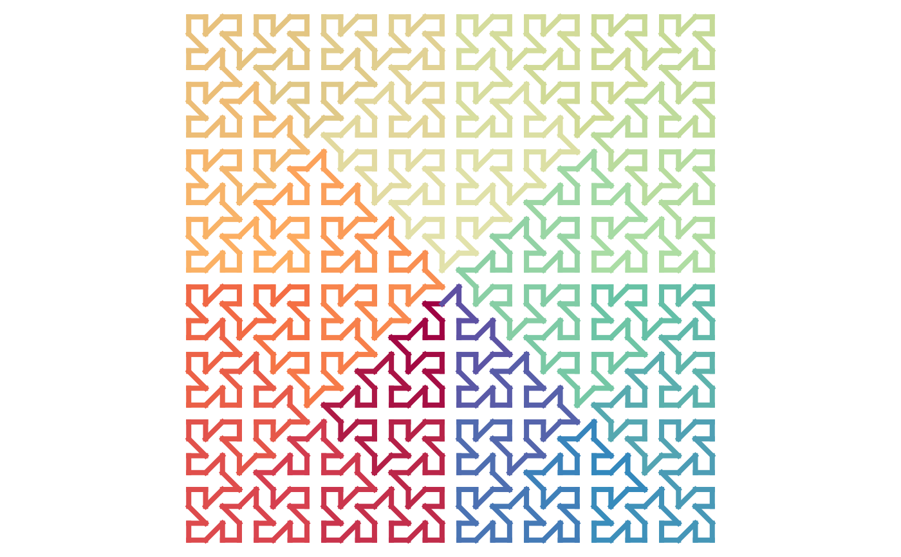

H-curve
sfc_h(h, iteration = 1, connect = c("h", "v"), random = FALSE)
expand_h(h1, h2 = h1, h3 = h1, h4 = h1, connect = "hhhh")Arguments
- h
It is the seed of the H-curve. The value should be one of
H0,H1orH2.- iteration
Number of iterations.
- connect
How the four subunits are connected to for the H-curve on the next level. See Details.
- random
Whether to generate subunits randomly.
- h1
The first subunit.
- h2
The second subunit.
- h3
The third subunit.
- h4
The fourth subunit.
Value
A two-column matrix of the coordinates of points on the curve.
Details
A H-curve on level k is composed by four subunits on level k-1. If we number the four subunits in the following order:
2 3
1 4where subunit 1 connects to subunit 2, subunit 2 connect to subunit 3, et al., and e.g. subunit 1 connects to subunit 2 via its toprigth corner. Since H-curve can be thought of as a closed curve, to, e.g. let subunit 1 to connect to subunit 2, its topright corner needs to be opened. There are two segments on subunit 1 that can be removed/opened: the horiozntal segment and the vertical segment on the topright corner in subunit 1.
In this way, in sfc_h(), the argument connect only accepts a single value of "h" or "v" where the types of segments for
all the four subunits are the same, i.e. whether all the horizontal corner segments are opened or whether all the vertical corner
segments are opened. In expand_h(), the argument connect can be set to a vector of length four where the type of segments of the
four subunits can be set separately.
In the random mode, each subunit is generated randomly, the type of the open segment is choosen randomly, also each subunit has a probability of 0.5 to rotate by 90 degrees.
Examples
draw_multiple_curves(
sfc_h(H0, iteration = 2),
sfc_h(H1, iteration = 2)
)
 draw_multiple_curves(
sfc_h(H1, iteration = 3, random = TRUE),
sfc_h(H1, iteration = 3, random = TRUE)
)
draw_multiple_curves(
sfc_h(H1, iteration = 3, random = TRUE),
sfc_h(H1, iteration = 3, random = TRUE)
)
 draw_multiple_curves(
expand_h(H0, connect = "hvvh"),
expand_h(H1, connect = "vvhh")
)
# set the four subunits separately
h1 = expand_h(H0, connect = "hhhh")
h2 = expand_h(H0, connect = "vvvv")
h3 = expand_h(H0, connect = "hvhv")
h4 = expand_h(H0, connect = "hvvh")
expand_h(h1, h2, h3, h4, connect = "vhvh") |> plot_segments()
fun = function(h, k) {
for(i in 1:k) h = expand_h(h, connect = "vhvh")
h
}
fun(H0, 4) |> plot_segments()

draw_multiple_curves(
expand_h(H0, connect = "hvvh"),
expand_h(H1, connect = "vvhh")
)
# set the four subunits separately
h1 = expand_h(H0, connect = "hhhh")
h2 = expand_h(H0, connect = "vvvv")
h3 = expand_h(H0, connect = "hvhv")
h4 = expand_h(H0, connect = "hvvh")
expand_h(h1, h2, h3, h4, connect = "vhvh") |> plot_segments()
fun = function(h, k) {
for(i in 1:k) h = expand_h(h, connect = "vhvh")
h
}
fun(H0, 4) |> plot_segments()
